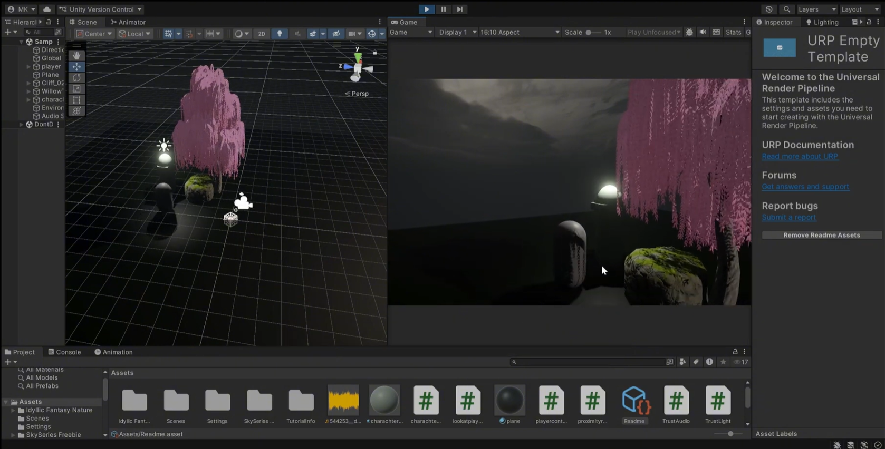
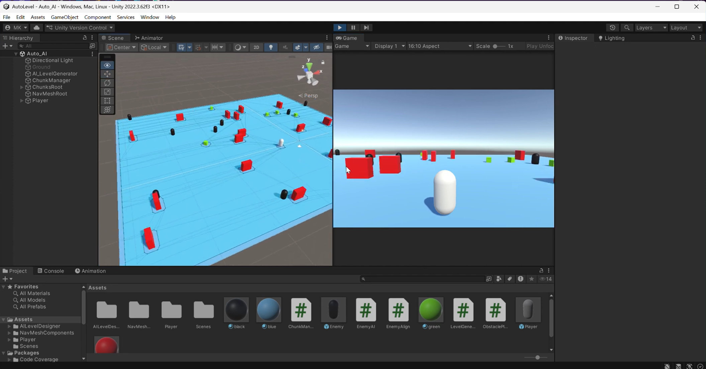
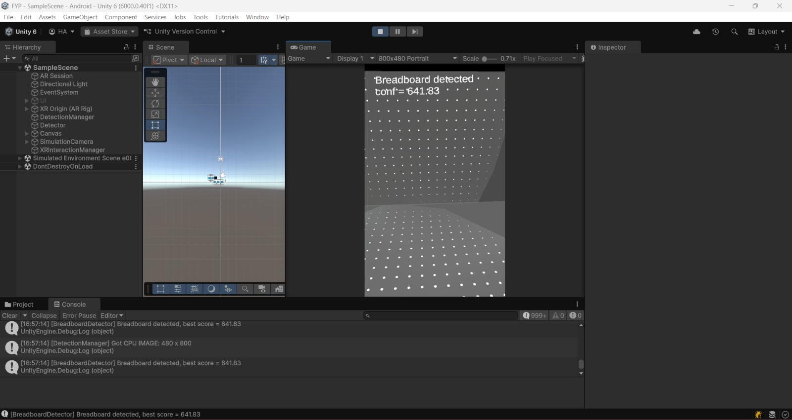
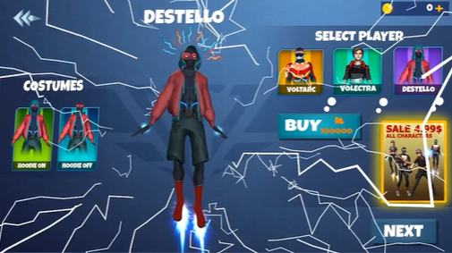
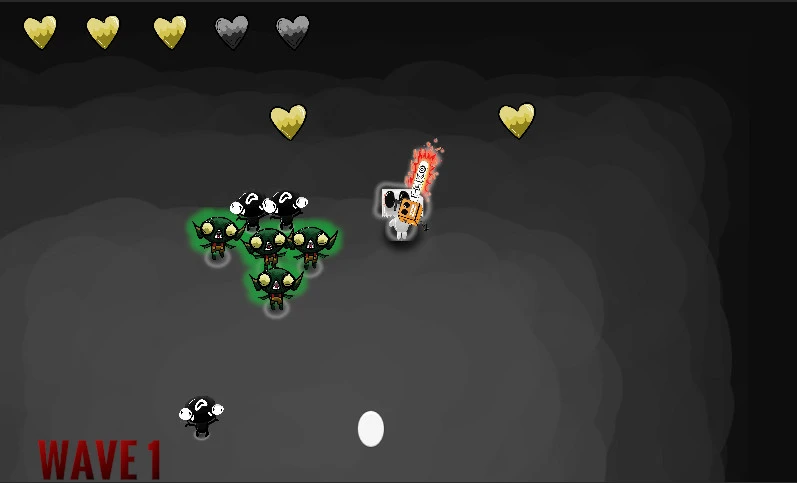

Featured Projects

Recognition Without Dialogue
Expressive interaction prototype.

Procedural AI World Generator
Runtime terrain + navmesh procedural agents.

AR Object Recognition FYP
ONNX realtime inference + AR overlay.

Superhero 3D Action Game (Studio)
Combat, traversal, UI, animation workflow.

Reckless Racer (2D)
Waypoint AI + track design + UI flow.

Peko’s Odyssey
Wave enemy spawner + combat logic.